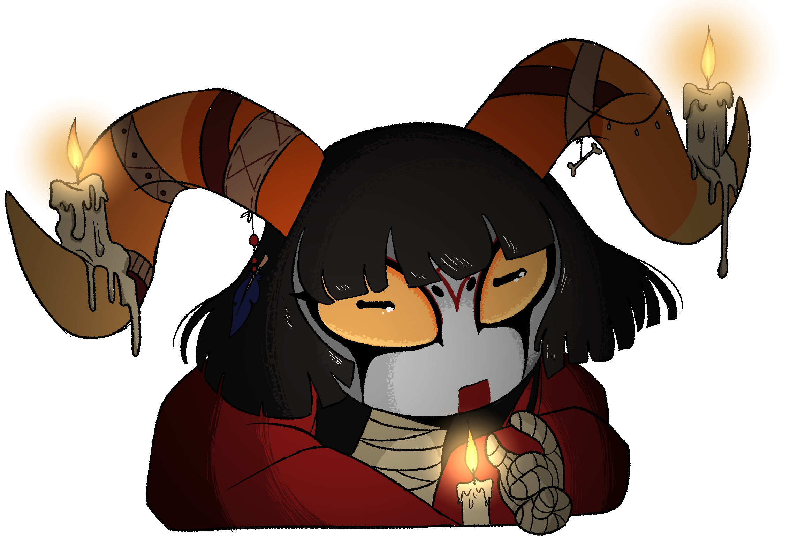

Cabría Dionis
Bio
Cabría Aelius, formerly Cabría Dionis, is a skilled witch who specializes in creating poisons and toxins. She loves candles and as a result is actually a skilled candlemaker and runs a successful candle shop from her house. Due to her time training under her mentor, La Brujota, she shuns society and prefers to live in the solitude of the forest much like her fellow witches. In true fashion as an heir to La Brujota, Cabría is definitely not known to be a kind person, only offering her services if she gets something in return, whether it be money or tradable goods. She has a tendency to hold grudges, and if someone crosses her or fails to pay her for her services, they can expect her revenge to come back 10 fold.
Appearance
She wears a red, hooded cloak underneath which her entire body, save for her head, is wrapped in bandages, giving her a mummified appearance. She has gray skin, typical of her species much like her yellow sclera, though her normality deviates at her pupils which appear as horizontally elongated slits, giving her a distinct otherworldly appearance. Much like her mentor she opts in to wearing makeup wearing red eyeshadow and black eyeliner with one downwards spike on each side, she completes her look with a red line leading from her mouth to her neck and her birth symbol painted on her forehead, adding to her mystical and magical appearance. Her head is crowned with spiral horns resembling those of some goat species, long enough to support her tendency to decorate them with lit candles and various trinkets like leather bands, animal bones, feathers, strings, and beads. Her hair is black and styled in a somewhat of a mullet with most of it being a bowl cut, except for the back which is left uncut and reaches down to her butt. Her eyebrows grow in a small oval shape, and she doesn't wear shoes, preferring to be barefoot even in the forest.
Powers and Skills
Pyrokinesis - Ability to freely generate, shape, and manipulate fire, the rapid oxidation of a material in the exothermic chemical process of combustion, releasing heat, light, and various reaction products, flame being the visible portion of the fire.
Poisoncraft - Can create poisons: substances that injures the health or destroys life when absorbed into the system
Candle making - Very skilled at making candles
PersonalityCabría has a prickly and harsh personality, often appearing grumpy and upset with a no-nonsense attitude towards those who cross her or do not meet her expectations. She is extremely confident in her skills as a witch and has good reason to, being a fierce and highly skilled pyrokinetic she actually has the power to back up her abrasive personality. Despite this she has a fierce loyalty to and love of her mentor La Brujota and feels a slight kinship between herself and her fellow witches. She is not one to hold back her opinions or not speak her mind, often coming across as a know-it-all and purposefully antagonistic to people who don't mindlessly follow or look up to her and her beloved mentor. Cabría can be somewhat vulnerable though a trait only seen when she's with her crush and childhood rival, Amares, who she begrugingly allows to call her "Diodio" a reference to her former surname, Amares to her dismay only seeing her as a little sister. To others she simply wants them to believe that she is much better than her. She is also fiercely independent, preferring to rely on her own skills and not ask for help from anyone but her mentor. She has a distaste for her own ancestor, who was a benevolent and charitable witch much preferring the cold and uncaring Ancestor of Amares shown by the fact that she went as far as taking her surname. She doesn't even know what magic her ancestor practiced assuming it was only fire magic as she has no interest in her or her teachings taking on poisoncraft instead.